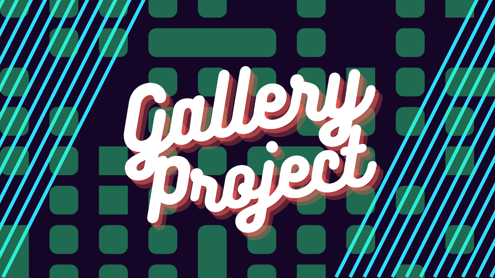
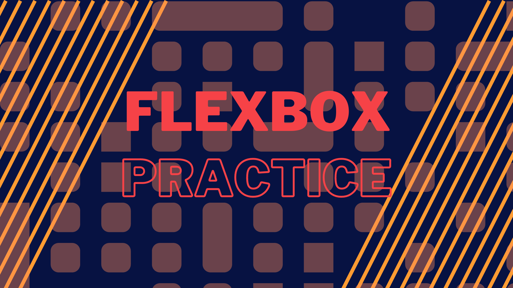
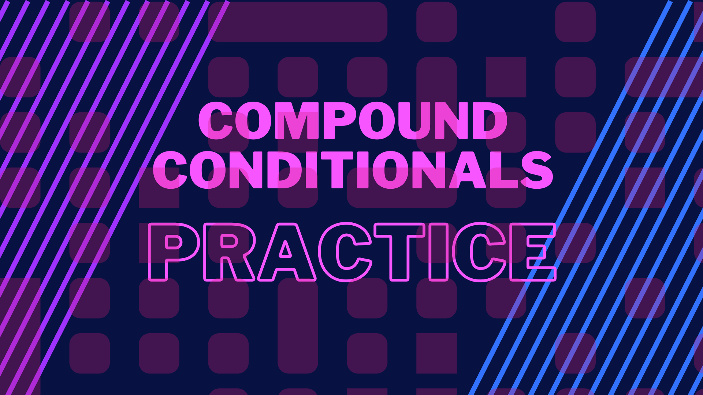
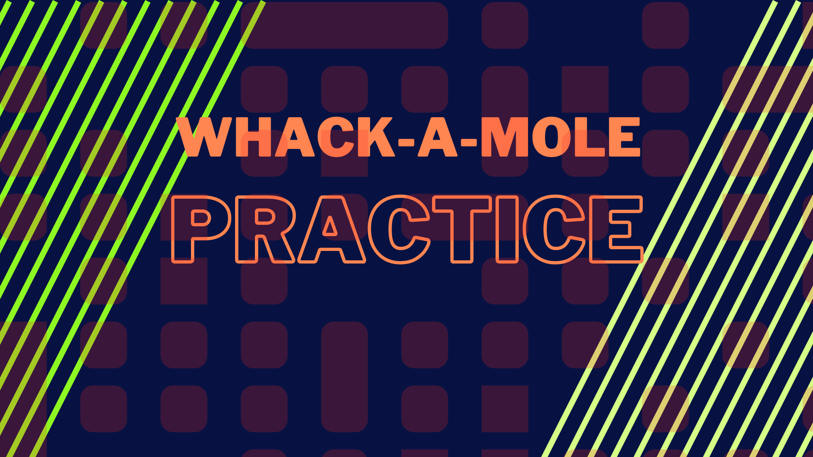

This is my most favorite project that I have worked on. In terms of making it and the final product. I really liked the freedom to choose what to base it on. Once I got the hang of it and what I had to do to make it work all the puzzle peices fell into place.
This project I did I had a lot of trouble with and it was mainly due to me not understanding a coding element that came at the very end. It was only after that I asked for help that the project was able to come together in the end and work as intended.
This project I still refer back on to for boarder and shape building in my other projects. It was a simple prject but I still learned a lot from it.
This was one of the more simpler projects I've done but it was nice to figure out how to do it and make it work.
This project was one of the most entertaining ones for me to make and one of the most fun to make too.

This drawing I made after I saw this new Pokemon revealed for the first time. Ive always liked how they designed their creatures with opposite traits clashing with each other. For example with this one here he certainky looks intimidating but his stubby legs make him sort of cute and goofy in a weird way that I like.

This drawing was made as a practice for making backgrounds with one of my charcters. I always thought that mushrooms kinda looked like cups upside downso that inspired me to use them to hold pink gooey honey.

This drawing is of captain Olimar from Pikmin. Part of the appeal of the game was the playfulness of Olimar and his pikmin that he commands.

This drawing I made with one of my characters. This drawing taught me that sometimes less is more and that it's important to not over do it with a lot of minor details that don't matter. The background isn't very detailed but it's not necessary to get the point across.